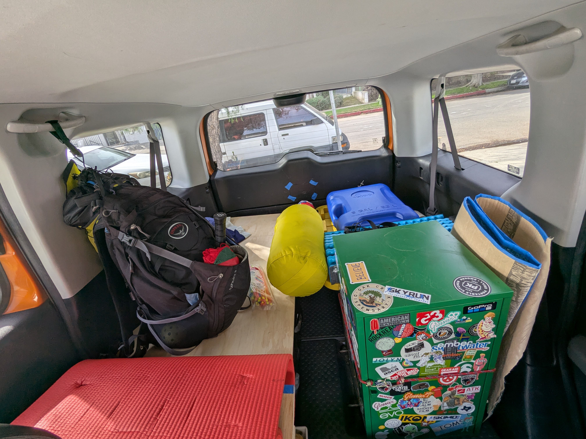
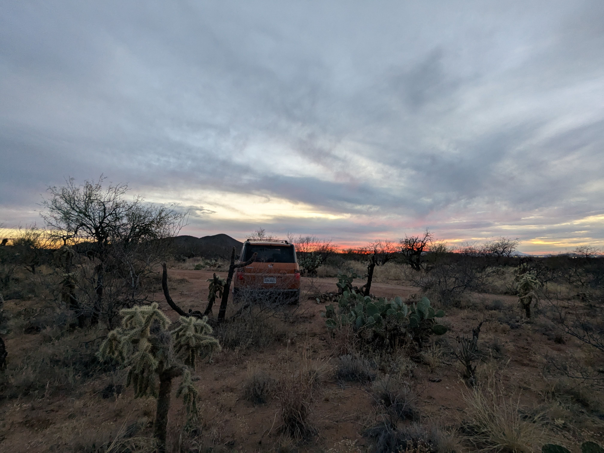

January
The odometer readings: 141198 miles
01/12/2025#
Why did I leave Nimble? Because I felt stuck. No purpose and no direction. Do I want to start another software engineering job? I don't know ... don't feel like it right now. But when I'm running out of money, I'll change my tune. What do I want? I don't know. What do I know? I know that I want to leave my comfort zone and explore. The growth comes from discomfort, right? I'm not gonna lie, leaving my job was scary. Deciding to take a break from full-time employment for "self exploration" was scary. Well, not so much scary but rather anxiety-inducing. The source of anxiety is money. I'm in a super privileged position of having substantial savings, but it feels "uncomfortable" to burn through them ... but it's just me bitching. Any great adventure involves sacrifice. Shedding some $$ isn't even that much of a sacrifice.
Anyway, the plan is to embark on a long roadtrip with an open heart and mind. With a readiness to embrace both good and bad things that happen along the way. I'll be taking notes along the way ... mainly to have something to share and reflect on. The roadtrip didn't start with me hitting the road – it started with me making a decision.
A test run of making beef jerkies in the oven. Before:
 After:
After:
 The jerky turned out to be fine. But the oven with its door ajar (to let the air with moisture escape) kept setting off the CO2 detectors. Annoying - the dehydration session was 7-8 hours. I would've used a French word
The jerky turned out to be fine. But the oven with its door ajar (to let the air with moisture escape) kept setting off the CO2 detectors. Annoying - the dehydration session was 7-8 hours. I would've used a French word Touché here. Because I thought, for years, that it's a fancy way of saying "too bad". No, touché in French means an acknowledgment during a discussion.
So I borrowed a dehydration machine from Josh (who, by the way, is totally weaker than me). I want to make several batches to take with me on a trip.
I also hacked together a spigot for my water jug:
 It's amazing how much more energy and motivation I have to work on [small] things without having to worry about my job.
It's amazing how much more energy and motivation I have to work on [small] things without having to worry about my job.
01/13/2025#
I want these journal entries to be available online. I use Obsidian for taking notes, and it has an official "publish" service for $8/mo. It looks really nice and convenient ... but expensive. I think I can mange to publish stuff through GitHub pages for $0. I already have a domain registered, and mkdocs + github actions + github pages combo looks like a simple and straightforward solution.
I dropped off my Cube for oil change. Also, I asked Kenny to perform the thorough undercarriage inspection. Cube isn't a quiet - though it's AMAZING – something is always rattling or whistling, but it has been this way for as long as I've owned it – at least 50k miles worth of driving. But I figured some peace of mind before setting out for a long drive wouldn't hurt. Well, everything seems to be fine; they replaced rear brake pads and did some adjustments.
01/14/2025#
Oh boy ... low gauge wires and high current connectors are expensive. Good thing I have an Amazon Prime trial; it ends tomorrow though.
I need to decide on a day when I depart. Hopefully, I'll finish the power setup upgrades this week. Everything else can be done on the road.
I received a call from my Medi-Cal Case Officer, my application might be approved soon. I don't know if I want to delay me leaving until I get approved ... $670/mo is a lot of money to pay for my current insurance through COBRA.
I think I had a very interesting instance of carbon monoxide poisoning yesterday. I was cooking borscht and baking a pie in parallel. In a tiny apartment with all doors and windows shut. I noticed an elevated heart rate and some palpitations (like, the heart was beating heavy). But then I left for my Monday pickleball ... and I was on fire. My precision and situational awareness were superb. Also, who would've guessed, my English was quite smooth too. And when I got back home, all my CO detectors were going off like crazy – it was kinda hard to breathe inside. Anyway, today I asked Claude AI if CO poisoning could cause the "enhanced" performance I observed. Well, it could. But not because occasional CO exposure is "healthy", but rather the poisoning triggered stress release of adrenaline and other hormones that boosted my performance. Some studies.
01/15/2025#
This journal is up and running on https://cake-icing.xyz/. All hail to GitHub pages, mkdocs, simple-blog, and Open Source.
I tried making jerky using the Dehydro machine (~1.1 pounds of beef and ~0.3 pounds of ground bison):

It yielded:

The prep was simple, the machine just works. I think I'll dehydrate all the meat I have in the freezer. I ran the machine for around six hours. The bison meat needed more time – the jerky had too much fat on them; I don't think it would've lasted for long in room temperature.
01/17/2025#
I got a new charger for my battery, a 12v/30A smart charger. An expensive sucker, but I figured it'd be quite handy to have a faster charging time when I'm on the road. The charger came with no wires, and since the output current is relatively high, the user manual called for 6 AWG wires. I never crimped a wire that thick without a crimping tool, but it can't be harder than crimping thinner wires, which I've crimped many times, right? Wrong. Attempts to crimp 6 AWG battery terminals with pliers and a nut were a waste of time and money. And then Anderson Powerpole Connector terminals, huge and VERY sturdy. Josh made a good suggestion of heating up the terminal before trying to crimp it. After burning my fingertips a bit, I got this:

It looked "good enough" to me ... but it wasn't.
I also tried to use my small clamp tool, but without it being affixed to a tabletop and a longer lever, I failed miserably to even make a tiny dent in the terminal:

I wired everything together, connected the charger ... and it was a complete failure. The connections were worryingly warm to the touch – a sign that there is a poor connection (precious electrical energy escapes as heat!). Even though it was alarming, the main issue was in the charger not being able to read the correct voltage on a battery due to a voltage drop -> it didn't supply a high enough current thinking that the charging process must be in the absorption phase.
Long story short, I got a hydraulic crimping tool and a set of new terminals ($100 üò≠), stripped old terminals, and crimped new terminals using the right tool. Beautiful:
 At this point, I've spent more money on my custom power setup than a decent EcoFlow power station would cost. Learning is expensive. Using the right tools saves money and time. Experience is priceless.
At this point, I've spent more money on my custom power setup than a decent EcoFlow power station would cost. Learning is expensive. Using the right tools saves money and time. Experience is priceless.
I've decided on the date of departure – January 22nd.
01/21/2025#
Tomorrow is the day. I think I did fairly well playing a game of elimination while packing my stuff for the trip. At first, I was a bit at a loss on how to organize different items, but if you group things by categories everything starts making sense. A green cabinet - kitchen stuff; a water jug - a water jug; a big black box with a yellow lid - garage/tools stuff; smaller boxes - different foods divided into food categories; a large collapsible black box - clothes and related stuff; a wooden box - power setup stuff. Some stuff didn't make it into the picture, but everything should fit inside the Cube quite neatly.

01/22/2025#
Miles driven: 163
Who would've guessed that they grow palm trees for sale in the Coachella valley. At first, I thought it was some fancy resort with a palm forest on site. But then those "forests" started popping up one after another.
A canyon with an uninspiring name "Box canyon" is my campsite for tonight. Quite a picturesque place, but sandy. I wish my Cube was AWD so I could drive some of the dirt roads.

I think I packed too much stuff with me. And I've already found out that I forgot some stuff like ukulele ü§¶‚Äç‚ôÇÔ∏è 
One of the challenges is to figure out the ways to do stretches inside a car.
01/23/2025#
Miles driven: 402
Pumped a full tank of gas for $2.99/gallon; got sentimental.
It's my first time visiting a proper Arizona desert. Maybe it's not much different from Californian high desert, but it's the first time I saw such big cacti up close.
It's also surprisingly easy to get lost in this desert (I haven't yet).

01/24/2025#
Miles driven: 590
I woke up at 10am today and felt kinda guilty for being that lazy. But then, I didn't sleep well the night before and the morning was so cozy – not too cold not too warm and quiet. I guess my body needed the rest. Speaking of quietness – small planes would fly above me every half an hour or so during daytime. I wonder why – the place was quite far from the Mexican border.
I drove a bunch today through Arizona and Tucson metro area in particular – everything is bustling with activity. The freeways are really good, everything looks very fresh and taken care of. I forgot that Arizona has only been a state since 1912. And the gas prices – $3/gallon or well below – makes me wonder about the tax structure on gas compared to California.
When I was getting some groceries in a store, I noticed the absence of tax. Apparently, food items intended for home consumption are exempt by law from the Arizona transaction privilege tax. I like that.
The sunset had unusual colors to it today. Reminded me of Utah. 
01/25/2025#
Miles driven: 768
I want to keep this trip as spontaneous as possible. But it's easier said than done – the moment I open Google maps to plan the route, I get flooded with attractions and points of interest. As a result, a lot of what you're going to see or visit is influenced by Google maps.
I saw a sign "Scenic highway 83; Patagonia" while driving to my intermediate destination in the morning. Yeah, the Arizona Patagonia. I took the detour and was rewarded with a view. The prominence of the mountains resembles what I've seen in the pictures of "real" Patagonia:

I made a stop at the Kartchner Caverns State Park. A really neat small park; relatively new - established in 2003. As the name states, the main attraction are two huge caverns discovered back in 1974. I was lucky to get the last spot on a cavern tour; the stuff is popular and gets sold out quickly. I quite enjoyed the tour – they keep the groups small, rangers were super funny and answered all the questions; the cavern was impressive. They don't allow to take pictures inside so I'll hold onto my memories for this one.
A fact from the Animal kingdom. The bats usually mate in late fall/winter. Then they hibernate for several months. Then female bats fly to a cavern (such as I visited in a state park), get pregnant, and birth their pups. The caveat is that there are no males; males have no business in a cave because the female bats hold on to male's sperm and let it fertilize eggs when needed only. TIL.
I had a history lesson at another museum (not subsidized by the government). Aliens are real, no shit:

A cloudy sky always makes for the best pictures:
01/26/2025#
Miles driven: 948
I went with the flow of the road today – only looked up highway numbers on Google maps and that's it. And it was awesome. Smaller state highways are awesome. You notice smaller things, but the smaller things is what defines a state, a county, or a town, right?
I passed through the town of Clifton today, a historic boom town where copper mining saw its inception. The town is cute with nice old buildings, but you could see that the money has left it long ago. 5 miles from it is another mining town, Morenci, named after one of the world biggest copper mines (biggest in North America) - the thing is absolutely massive (not as big as Josh, though) - 80 square miles and growing. At the expense of the nearby mountains. The price of progress.
 Leaving the mine I dropped right into the Apache National Forest. Freeway 180 that runs through is gorgeous and completely empty. I've seen only a handful of other cars the entire day - loved it. At some point, I randomly glanced at my offline Gaia GPS maps and saw a short trail stemming off of a highway to some peak. After driving for a couple of hours I felt compelled to move for a bit, so I figured I could run up (haha) this trail. Well, the peak had a surprise for me, a fire lookout tower. I wish it were opened though.
Leaving the mine I dropped right into the Apache National Forest. Freeway 180 that runs through is gorgeous and completely empty. I've seen only a handful of other cars the entire day - loved it. At some point, I randomly glanced at my offline Gaia GPS maps and saw a short trail stemming off of a highway to some peak. After driving for a couple of hours I felt compelled to move for a bit, so I figured I could run up (haha) this trail. Well, the peak had a surprise for me, a fire lookout tower. I wish it were opened though.
 Some years ago, I listened to a podcast where they were telling the stories of volunteers who spend months at a time in those towers, observing the mountains for signs of wildfires. I wouldn't mind trying that out myself.
Some years ago, I listened to a podcast where they were telling the stories of volunteers who spend months at a time in those towers, observing the mountains for signs of wildfires. I wouldn't mind trying that out myself.
The sun, a tree, and a frozen lake: One should strive to increase their capacity of enjoying ordinary things.
01/27/2025#
Miles driven: 1201
A shout out goes to the mediocre Internet coverage in rural Arizona and New Mexico; it feels good not to have service during overnight stays. Makes you think of how little Internet and Internet-based entertainment I need – the itch is there, though.
I spent yesterday's night near the town of Alpine in Apache NF, and what a picturesque area it is. Easily on par with Mammoth Lakes area by my standards. Sure, the mountains are smaller but high altitude plains as beautiful as the towering giants in Sierra mountains. Driving through such areas I always have a desire to live there. But than what'd you do there? But than than, I live in LA and I don't know what I'd do ü§∑‚Äç‚ôÇÔ∏è
Yesterday was the day of the first campfire meal. Technically I cooked it after I had dinner and only saw the result in the morning. I left the wrapped food in the pit not bothering to take it inside the car – it was freezing at night anyway. And then, driving out of the woods in the morning, I saw a wolf crossing the road. I'm almost sure it was a wolf – it was too large for a coyote, and it had grey fur. I'm glad it didn't visit me for dinner at night.


Talking about places to live in, would I want to live in a Pie Town? Well, they uphold their name and serve a huge variety of pies. Had a stop there for pies and shower. The pie-shop lady said they only have 120 people living there. A very tranquil place with donation-based showers at a local, completely empty, RV park. I made a grand donation in the amount of two dollars and a note to carry more small cash.
I saw this point on a map labeled "Very Large Array" (VLA) – the name is kinda "plain". But by now, I've learned that Americans tend to label the most extraordinary things with the most ordinary names. This spot turned out to be on my way – the biggest telescope in the world. It consists of an array of 28 "small" radio telescopes:
 All telescopes are synchronized and can be arranged in different formations depending on the current experiment – there are 40 miles of railroads and 72 stations to which individual dishes can be moved. The scale of this instrument is huge. (Josh still ranks number one though).
All telescopes are synchronized and can be arranged in different formations depending on the current experiment – there are 40 miles of railroads and 72 stations to which individual dishes can be moved. The scale of this instrument is huge. (Josh still ranks number one though).
Being able to cook inside of a car is such a luxury – makes my journey so convenient. Thanks to Corinne for landing me her green cabinet. It has taken on the very important duty of a kitchenette:
I have yet to see people carrying a gun.
01/28/2025#
Miles driven: 1452
I hunkered down on a random ranch off of a freeway for the previous night. While I was looking around for something to dig up a hole for number 2 late at night, I had an unexpected encounter with a cow's carcass. It looks much less menacing in daylight:
 But this ranch kept on giving. The next morning while taking a leak, I had a friendly meeting with a bull. I noticed the bull; the bull noticed me; the bull produced multiple angry "mooo"s and wrapped it up with some bucking; I GTFO promptly.
But this ranch kept on giving. The next morning while taking a leak, I had a friendly meeting with a bull. I noticed the bull; the bull noticed me; the bull produced multiple angry "mooo"s and wrapped it up with some bucking; I GTFO promptly.
A few miles from the site where I slept is a Trinity missile site – a place where they detonated the first nuclear bomb. Unfortunately it's closed to the public except for several days in October.
At the White Sands National Park visitor center, a random guy struck up a conversation with me about how awesome Honda Elements are. He totaled his Element recently and was wondering if I'm selling mine. I wished him luck.
The White Sands NP is something different from all other places I've seen. It's like you're in a winter wonderland but it's sand. Enjoyed some barefoot hiking across several dunes – the sand felt pristine, for lack of a better word.


Driving state freeways with next to zero traffic is very chill. But it's a trap, when you get back on busy roads, you must almost force yourself to be attentive again. I almost got rear-ended today because of an unusual road pattern on a freeway. Made me remember that guy who totaled his Element recently. I don't want to be "that guy".
Probably just a coincidence of me picking my route, but freeways in New Mexico are unusually straight; and now I know that the number of trucks in LA isn't that big.
Colors in the sky:

A wolf I saw yesterday was indeed a wolf – a Mexican Grey Wolf. They're generally shy and don't mess with people. Unlike territorial bulls.
01/29/2025#
Miles driven: 1572
I like the gas station coffee more than Starbucks coffee. Particularly in New Mexico, each gas station offers a variety of beans and fresh creamers. You're in control of how much coffee and cream you want (and therefore its temperature). And all of this costs only about $1.50. I have very low standards for coffee.
A town where they chose Frenchie a mascot of one of the local teams (that competes at a serious level nationwide):
 Carlsbad NP has the best restrooms, hands down:
I tried to produce my own stalagmite there, but who am I kidding:
The main room of this cave is something beyond comprehension, miles and miles of passageways and trails through the kingdom of dark elves. What you can see on a self guided tour is only relatively small portion of the cave system - there are literally hundreds of miles of adjacent caves opened only to researchers. I was seriously impressed.
Carlsbad NP has the best restrooms, hands down:
I tried to produce my own stalagmite there, but who am I kidding:
The main room of this cave is something beyond comprehension, miles and miles of passageways and trails through the kingdom of dark elves. What you can see on a self guided tour is only relatively small portion of the cave system - there are literally hundreds of miles of adjacent caves opened only to researchers. I was seriously impressed.
I've blown through three fuses in my car trying to get the battery charger working. Good thing that I can configure the maximum output current in my charger. The 11 amps output keeps my 15 amps fuse happy.
What is happening inside a "rage" room when one has an axe?

01/30/2025#
Miles driven: 1871
Spent a lot of time driving today – crossed into Texas and made it to Big Bend NP. Spent a lot of time driving and thinking. Our attention span is a very valuable resource. Everyone knows about how distracting are social media, news, and such. But that's only the top of an iceberg. I've been very diligent with what I consume on the Internet: a select few news sources, several informational/educational podcasts, a set of YouTube channels I follow, plus Audible books. Nothing binge-able, nothing that could suck me in. But the stuff I consume still requires my attention, a lot of it. It doesn't matter if the quality of content is high – you spend your limited attention consuming it. It took me some abstinence from the Internet to realize it. Without the Internet, without my usual distractions, I end up thinking more about things that matter to me. Without distractions there is a certain continuity to these thoughts – I maintain a thread of thinking throughout the days; it's not choppy. Without distractions it's as if I have more room to think. One would call it boredom, but boredom creates spaces necessary for new thoughts and patterns to form.
I entered Texas in the area on top of Permian basin oil field. As usual , I took smaller state highways ... and, boy, Texas drills and sucks up that sweet dark juice a lot. For hours I was driving through one of the most industrial landscapes I've ever seen – endless streams of work trucks, omnipresent oil rigs and storage tanks, and a lot of roadside debris. A freak sandstorm (maybe a regular occurrence there) buffeted my shoe-box shaped car relentlessly. A finishing streak was a sight of a dead bull by the roadside.
Did some cavern exploration earlier in the morning – kinda eerie but exhilarating. and surprisingly good full-body workout.


01/31/2025#
Miles driven: 1960
I'm on the fence about the Big Bend NP. On the one hand it has all attributes of a great national park, on the other I felt somewhat bored and dragging. Either I've been driving too much lately or I've overwhelemed by natural beauty.
 I spotted a line of ants crossing the trail today. Many of them carried small sticks, leaves, and other stuff that's not food. One guy was hauling a stick three times his size (while simultaneously navigating a rock; Josh has no excuse for not being able to do a "warm-up bolder" traverse).
I spotted a line of ants crossing the trail today. Many of them carried small sticks, leaves, and other stuff that's not food. One guy was hauling a stick three times his size (while simultaneously navigating a rock; Josh has no excuse for not being able to do a "warm-up bolder" traverse).
 Finished listening to a book, "Courage to be disliked". The book has chances to become my favorite this year.
Finished listening to a book, "Courage to be disliked". The book has chances to become my favorite this year.